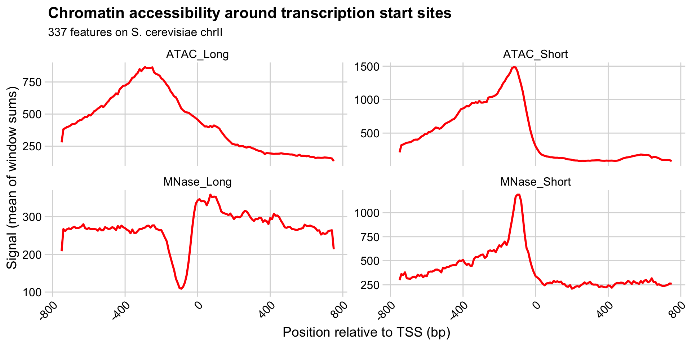

Meta-plots and heatmaps
RNA Bioscience Initiative | CU Anschutz
2025-09-15
Last class we saw what the different methods to profile chromatin accessibility can tell us about general chromatin structure and possible regulation at specific regions in a small portion of a chromosome.
We also want to make sure these conclusions are valid throughout the genome. Since we want to keep the file sizes small, we will ask if they are valid across an entire chromosome.
First we will plot the profiles of all our data sets relative to the transcription start site (TSS), where all the action seems to be happening.
First, we need to load relevant files:
yeast_tss_chrII.bed.gz contains transcription start sites (TSS) for genes on yeast chromosome 2.sacCer3.chrom.sizes contains the sizes of all yeast chromosomes, needed for some of the calculations we’ll do. We’ll grab this from the UCSC download site.read_bed() and read_genom() are valr functions.
Next we’ll load bigWigs for the ATAC and MNase experiments, containing either short or long fragments.
Recall that the information encoded in short and long fragments should be reflected in our interpretations.
acc_tbl <-
tibble(
file_name = c(
"yeast_mnase_lt50.bw",
"yeast_mnase_134_160.bw",
"yeast_atac_lt120.bw",
"yeast_atac_gt120.bw"
),
sample_type = c(
"MNase_Short",
"MNase_Long",
"ATAC_Short",
"ATAC_Long"
)
) |>
mutate(
file_path = here("data/block-dna", file_name),
big_wig = purrr::map(
file_path,
\(x) read_bigwig(x)
)
) |>
select(sample_type, big_wig)Next, we need to set up some windows for analyzing signal relative to each TSS. This is an important step that will ultimately impact our interpretations.
In genomic meta-plots, you first decide on a window size relevant to the features you are measuring, and then make “windows” around a reference point, spanning some distance both up- and downstream. If the features involve gene features, we also need to take strand into account.
Reference points could be:
The window size should be relevant the reference points, such that small- or large-scale features are emphasized in the plot. Moreover, the window typically spans some distance both up- and downstream of the reference points.
Once the window size has been decided, the next step is to make “sub-windows” around a reference point. If gene features are involved, we also need to take strand into account.
(The state of genome annotation directly influences the quality of the meta-plot or heatmap.)
For small features like transcription factor binding sites (8-20 bp), you might set up smaller windows (maybe 1 bp) at a distance ~20 bp up- and downstream of a reference point.
For larger features like nucleosome positions or chromatin domains, you might set up larger windows (~200 bp) at distances up to ~10 kbp up- and downstream of a set of reference points.
Metaplot workflow overview
[1] -750 -740 -730 -720 -710 -700 -690 -680 -670 -660 -650
[12] -640 -630 -620 -610 -600 -590 -580 -570 -560 -550 -540
[23] -530 -520 -510 -500 -490 -480 -470 -460 -450 -440 -430
[34] -420 -410 -400 -390 -380 -370 -360 -350 -340 -330 -320
[45] -310 -300 -290 -280 -270 -260 -250 -240 -230 -220 -210
[56] -200 -190 -180 -170 -160 -150 -140 -130 -120 -110 -100
[67] -90 -80 -70 -60 -50 -40 -30 -20 -10 0 10
[78] 20 30 40 50 60 70 80 90 100 110 120
[89] 130 140 150 160 170 180 190 200 210 220 230
[100] 240 250 260 270 280 290 300 310 320 330 340
[111] 350 360 370 380 390 400 410 420 430 440 450
[122] 460 470 480 490 500 510 520 530 540 550 560
[133] 570 580 590 600 610 620 630 640 650 660 670
[144] 680 690 700 710 720 730 740 750Next, we’ll use two valr functions to expand the window of the reference point (bed_slop()) and then break those windows into evenly spaced intervals (bed_makewindows()).
# A tibble: 50,887 × 7
chrom start end name score strand .win_id
<chr> <int> <int> <chr> <chr> <chr> <int>
1 chrII 9800 9810 YBL107C . - 1
2 chrII 9810 9820 YBL107C . - 2
3 chrII 9820 9830 YBL107C . - 3
4 chrII 9830 9840 YBL107C . - 4
5 chrII 9840 9850 YBL107C . - 5
6 chrII 9850 9860 YBL107C . - 6
7 chrII 9860 9870 YBL107C . - 7
8 chrII 9870 9880 YBL107C . - 8
9 chrII 9880 9890 YBL107C . - 9
10 chrII 9890 9900 YBL107C . - 10
# ℹ 50,877 more rowsAt this point, we also address the fact that the TSS data are stranded. Can someone describe what the issue is here, based on the figure above?
This next step uses valr bed_map(), to calculate the total signal for each window by intersecting signals from the bigWig files.
# A tibble: 4 × 3
sample_type big_wig tss_win_sum
<chr> <list> <list>
1 MNase_Short <tibble [17,738 × 4]> <tibble [50,887 × 6]>
2 MNase_Long <tibble [69,120 × 4]> <tibble [50,887 × 6]>
3 ATAC_Short <tibble [44,852 × 4]> <tibble [50,887 × 6]>
4 ATAC_Long <tibble [51,906 × 4]> <tibble [50,887 × 6]>Once we have the values from bed_map(), we can group by win_coord and calculate a summary statistic for each window.
Remember that win_coord is the same relative position for each TSS, so these numbers represent a composite signal a the same position across all TSS.
# A tibble: 604 × 4
win_coord sample_type win_mean win_sd
<dbl> <chr> <dbl> <dbl>
1 750 MNase_Short 260. 301.
2 740 MNase_Short 264. 243.
3 730 MNase_Short 251. 218.
4 720 MNase_Short 244. 205.
5 710 MNase_Short 239. 231.
6 700 MNase_Short 238. 247.
7 690 MNase_Short 245. 231.
8 680 MNase_Short 255. 219.
9 670 MNase_Short 250. 282.
10 660 MNase_Short 281. 360.
# ℹ 594 more rowsFinally, let’s plot the data relative to TSS for each of the windows.
n_tss <- length(unique(yeast_tss$name))
ggplot(
tss_meta_tbl,
aes(
x = win_coord,
y = win_mean
)
) +
geom_line(linewidth = 1, color = "red") +
facet_wrap(
~sample_type,
nrow = 2,
scales = "free_y"
) +
theme_minimal_grid() +
theme(
axis.text.x = element_text(
angle = 45,
vjust = 1,
hjust = 1
)
) +
labs(
x = "Position relative to TSS (bp)",
y = "Signal (mean of window sums)",
title = "Chromatin accessibility around transcription start sites",
subtitle = glue("{n_tss} features on S. cerevisiae chrII")
)
What is the direction of transcription in these meta-plots?
What are the features of chromatin near TSS measured by these different experimental conditions?
How do you interpret the increased signal of the +1 nucleosome in the “MNase_Long” condition, relative to e.g. -1, +2, +3, etc.?
What are the differences in ATAC and MNase treatments that lead to these distinctive patterns?
To generate a heatmap, we need to reformat our data slightly.
Take a look at acc_tbl and think about how you might reorganize the following way:
We’re going to plot a heatmap of the “MNase_Long” data. There are two ways to get these data
# A tibble: 50,887 × 6
chrom start end name win_coord win_signal
<chr> <int> <int> <chr> <dbl> <dbl>
1 chrII 9800 9810 YBL107C 750 206.
2 chrII 9810 9820 YBL107C 740 410.
3 chrII 9820 9830 YBL107C 730 406.
4 chrII 9830 9840 YBL107C 720 406.
5 chrII 9840 9850 YBL107C 710 404.
6 chrII 9850 9860 YBL107C 700 370.
7 chrII 9860 9870 YBL107C 690 330.
8 chrII 9870 9880 YBL107C 680 269.
9 chrII 9880 9890 YBL107C 670 242.
10 chrII 9890 9900 YBL107C 660 276.
# ℹ 50,877 more rows# A tibble: 50,887 × 7
sample_type chrom start end name win_coord win_signal
<chr> <chr> <int> <int> <chr> <dbl> <dbl>
1 MNase_Long chrII 9800 9810 YBL10… 750 206.
2 MNase_Long chrII 9810 9820 YBL10… 740 410.
3 MNase_Long chrII 9820 9830 YBL10… 730 406.
4 MNase_Long chrII 9830 9840 YBL10… 720 406.
5 MNase_Long chrII 9840 9850 YBL10… 710 404.
6 MNase_Long chrII 9850 9860 YBL10… 700 370.
7 MNase_Long chrII 9860 9870 YBL10… 690 330.
8 MNase_Long chrII 9870 9880 YBL10… 680 269.
9 MNase_Long chrII 9880 9890 YBL10… 670 242.
10 MNase_Long chrII 9890 9900 YBL10… 660 276.
# ℹ 50,877 more rowsEither way, now we need to reformat the data.
# A tibble: 337 × 152
name `-750` `-740` `-730` `-720` `-710` `-700` `-690`
<chr> <dbl> <dbl> <dbl> <dbl> <dbl> <dbl> <dbl>
1 YBL001C 81.9 81.9 81.9 81.9 81.9 81.9 166.
2 YBL002W 368. 370. 364. 353. 175. 353. 349.
3 YBL003C 229. 459. 457. 452. 459. 465. 457.
4 YBL004W 284. 267. 269. 137. 259. 229. 208.
5 YBL005W 299. 314. 164. 164. 326. 322. 314.
6 YBL006C 173. 173. 339. 330. 333. 332. 353.
7 YBL009W 265. 265. 261. 250. 225. 213. 229.
8 YBL010C 225. 455. 459. 446. 427. 404. 381.
9 YBL011W 368. 328. 255. 196. 160. 141. 156.
10 YBL014C 68.6 139. 133. 124. 124. 131. 68.6
# ℹ 327 more rows
# ℹ 144 more variables: `-680` <dbl>, `-670` <dbl>,
# `-660` <dbl>, `-650` <dbl>, `-640` <dbl>, `-630` <dbl>,
# `-620` <dbl>, `-610` <dbl>, `-600` <dbl>, `-590` <dbl>,
# `-580` <dbl>, `-570` <dbl>, `-560` <dbl>, `-550` <dbl>,
# `-540` <dbl>, `-530` <dbl>, `-520` <dbl>, `-510` <dbl>,
# `-500` <dbl>, `-490` <dbl>, `-480` <dbl>, …Once we have the data reformatted, we just convert to a matrix and feed it to ComplexHeatmap::Heatmap().
It’s worth considering what meta-plots and heatmaps can and can’t tell you.
What are the similarities and differences between heatmaps and meta-plots?
What types of conclusions can you draw from each type of plot?
What are some features of MNase-seq and ATAC-seq that become more clear when looking across many loci at the same time?
What are some hypotheses you can generate based on these plots?